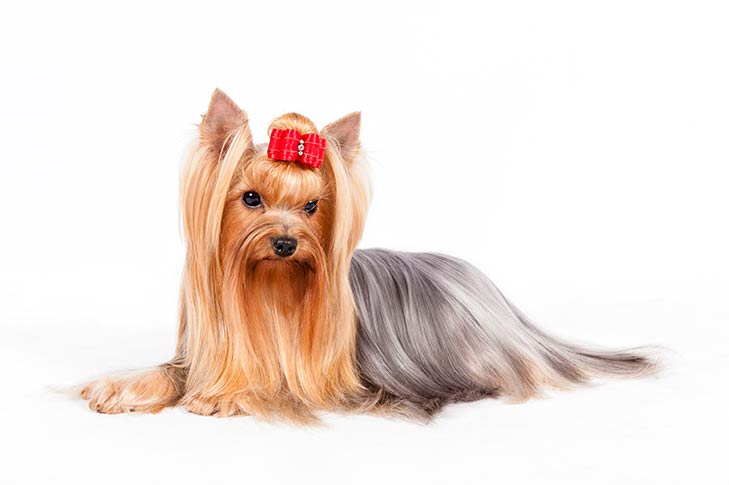
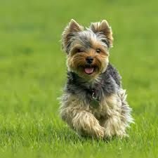
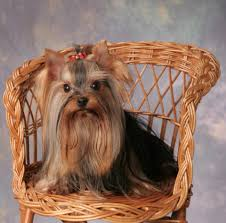
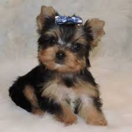
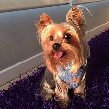
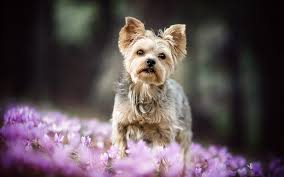

Yorkshire Terrier

About the Yorkshire Terrier
The Yorkshire Terrier is a small dog breed of terrier type, developed during the 19th century in
Yorkshire, England. Ideally its maximum size is 3.2 kg. A popular companion dog, the Yorkshire Terrier
has also been part of the development of other breeds, such as the Silky Terrier. It has a grey,
black and tan coat, and the breed's nickname is Yorkie.
Care
- Nutrition
The Yorkshire Terrier should do well on a high-quality dog food, whether commercially manufactured or
home-prepared with your veterinarian’s supervision and approval. Any diet should be appropriate to the dog’s
age (puppy, adult, or senior). Some dogs are prone to getting overweight, so watch your dog’s calorie
consumption and weight level. Treats can be an important aid in training, but giving too many can cause
obesity. Learn about which human foods are safe for dogs, and which are not. Check with your vet if you have
any concerns about your dog’s weight or diet. Clean, fresh water should be available at all times.
- Grooming
The Yorkshire Terrier’s coat is very similar to human hair and should be treated accordingly. If the coat is
kept long, it needs to be brushed daily. To avoid eye irritation, the hair on the upper part of the head
should be trimmed short or pulled up into a topknot. The Yorkie will need a bath every week or so. Check the
ears weekly for any debris or signs of infection. The breed’s national parent club, the Yorkshire Terrier
Club of America, provides detailed grooming and bathing instructions on its website.
- Exercise
Even small dogs require exercise to stay healthy, both mentally and physically. Yorkies will benefit from
both moderate exercise, such as walks with their owner at a steady pace, as well as occasional short bursts
of activity, such as chasing after a tennis ball in the backyard. A short walk twice a day will likely be
enough for your Yorkie to see new scenery and burn off energy. Participating in dog sports such as obedience
or agility also will provide beneficial activity to keep him healthy, while challenging his mind as well.
- Training
Yorkies love their owners, and are very intelligent and eager to please. Offering effusive praise and treats
for good behavior will work far better with the Yorkie than harsh corrections. Starting from an early age,
the Yorkie should be socialized to strange situations, people, and other dogs. Take him into new situations
slowly, and always in a calm and happy atmosphere. These should be positive experiences. Despite their small
size, Yorkies can participate in and excel at canine activities such as rally, agility and obedience, and
many Yorkies serve with their human partners in roles such as therapy work.
- Health
Yorkshire Terriers are generally healthy dogs, and responsible breeders screen their stock for health
conditions such as eye anomalies and luxating patella, a dislocated kneecap once called a “trick knee” in
humans. To help avoid the latter, care should be taken to limit the Yorkie’s jumping height, especially as a
puppy.
Pictures with Terriers





Other Breeds to Explore here:
More to Explore:
The information is taken from the website: American Kennel Club
Made by Dina Gritco
Phone number: +37368222168
Email: dina.virlan@gmail.com
Linkedind